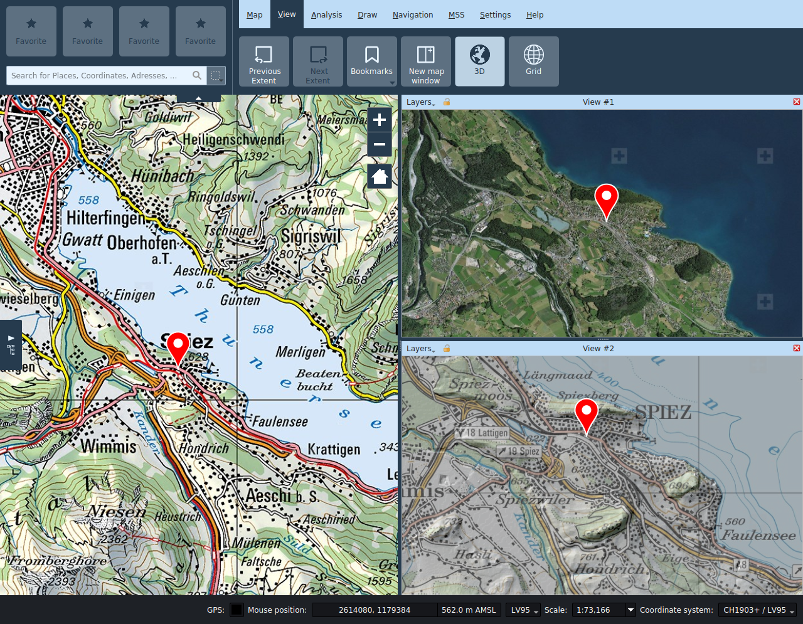
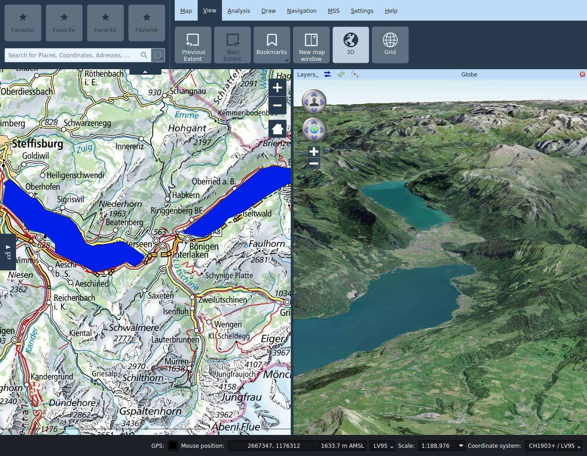
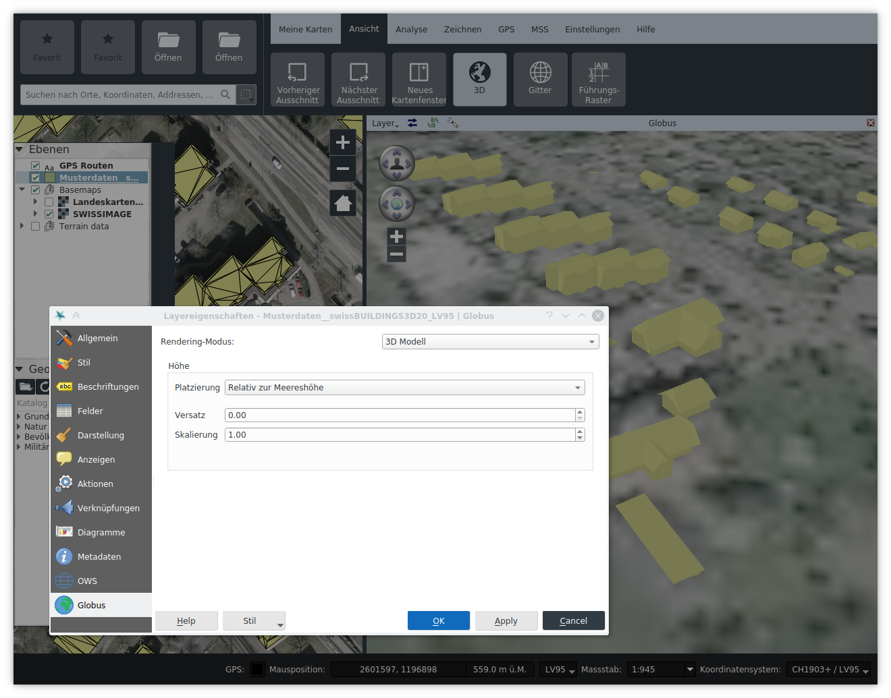

Ansicht
Vorheriger / Nächster Ausschnitt
Beim Bewegen in der Karte kann über die Funktion Vorheriger Ausschnitt auf den vorher angezeigten Kartenausschnitt zurückgekehrt werden. Über Nächster Ausschnitt wird wieder auf den danach gewählten Kartenausschnitt gewechselt.
Neues Kartenfenster
Über die Funktion Neues Kartenfenster können weitere Kartenfenster geöffnet werden. Diese können durch Ziehen an der Titelleiste beliebig innerhalb des Hauptfenster oder entkoppelt davon angeordnet werden.
In den Unterfensteransichten können unabhängig von der Hauptansicht Ebenen aktiviert und deaktiviert werden. Der Ausschnitt lässt sich unabhängig von der Hauptansicht steuern oder mit dieser koppeln indem das Schloss-Symbol in der Titelleiste des Unterfenster aktiviert wird.
In Kartenunterfenster ist nur das Navigationswerkzeug verfügbar, sämtliche weitere Werkzeuge können nur in der Hauptansicht verwendet werden.
Der Titel der Unterfenster lässt sich bei Bedarf ändern.

3D
Über die Funktion 3D wird ein zusätzliches Fenster mit einer Globus-Ansicht geöffnet. Dieses Fenster wird automatisch angeordnet, kann aber auch mit der Maus an eine andere Stelle innerhalb oder ausserhalb des Programmfensters bewegt werden.

Einstellungen
Die angezeigten Ebenen können unabhängig vom Hauptfenster im Menü Fenster ausgewählt werden.
- Ausschnitt synchronisieren: Über das Symbol Ausschnitt synchronisieren wird auf dem Globus zum Kartenausschnitt des Hauptfensters navigiert.
- Szene neu laden: Über das Symbol Szene neu laden wird die Ebenen im Globus neu geladen.
- Globus Einstellungen: Über das Symbol Globus Einstellungen wird ein Dialog mit weiteren Einstellungsmöglichkeiten aufgerufen. Dort werden unter anderem die Geländemodelle für die 3D Ansicht konfiguriert, und es können ebenfalls Bildebenen hinzugefügt werden. Die darzustellende Ebenen der 2D Ansicht werden im Menü links in der Titelleiste ausgewählt. Im Interesse der Performance werden standardmässig nur lokale Ebenen der 2D Ansicht aktiviert - Hintergrundbildebenen sollten nach Möglichkeit direkt als Bildebenen im Globus Einstellungsdialog hinzugefügt werden.
Ebenen der 2D Ansicht werden standardmässig als Textur über das Gelände des Globus gezeichnet. Vektorebenen (darunter Redlining) können alternativ entweder als extrudierte 2.5D Modelle oder als 3D Modelle gezeichnet werden, wobei der Stil der 2D Ansicht soweit wie möglich in der 3D Ansicht übernommen wird. Für die Darstellung als 3D Modelle müssen die Geometrien der Ebene mit Höheninformationen (Z-Koordinaten) versehen sein, und diese müssen entweder gegenüber dem Gelände oder dem Meeresspiegel ausgedrückt sein. Die Darstellungsoptionen für Vektorebenen kann man in den entsprechenden Layereigenschaften setzten.
Die Tooltips der Eingabefelder in den Globus-Einstellungen der Ebene beschreiben die verschiedenen Optionen im Detail.
Die Schattierung von 3D Modelle hängt vom Sonnenstand ab. Der Sonnenstand kann durch eine benutzerdefinierte Zeit/Datumsangabe in den Globus Einstellungen gesteuert werden.

Stecknadeln, Kamerabilder und einpunkt MSS Symbole werden als Billboards angezeigt.
Navigation
- Navigation Ansichtswinkel: Im oberen Navigationsrad wird die Kamera über die Links-/Rechts-Pfeile nach links bzw. rechts gedreht. Über die Auf-/Ab-Pfeile wird der vertikale Sichtwinkel der Kamera geändert.
- Navigation auf Globus: Im unteren Navigationsrad wird der Globus über die Pfeiltasten entsprechend nach links, rechts, oben oder unten gedreht.
- +: Die Kamera bewegt sich näher zum Globus, das heisst die Höhe der Kamera wird reduziert.
- -: Die Kamera bewegt sich weiter vom Globus weg, das heisst die Höhe der Kamera wird angehoben.
Gitter
In der Registerkarte Ansicht kann das Kartengitter aktiviert werden. Das Gitter basiert auf dem gewähltem Kartenkoordinatensystem.